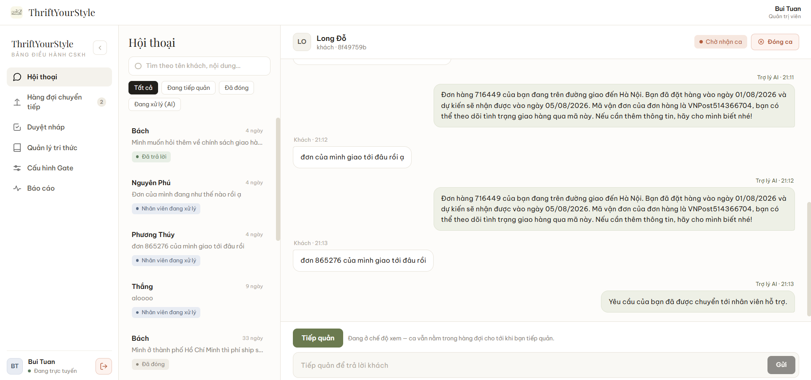
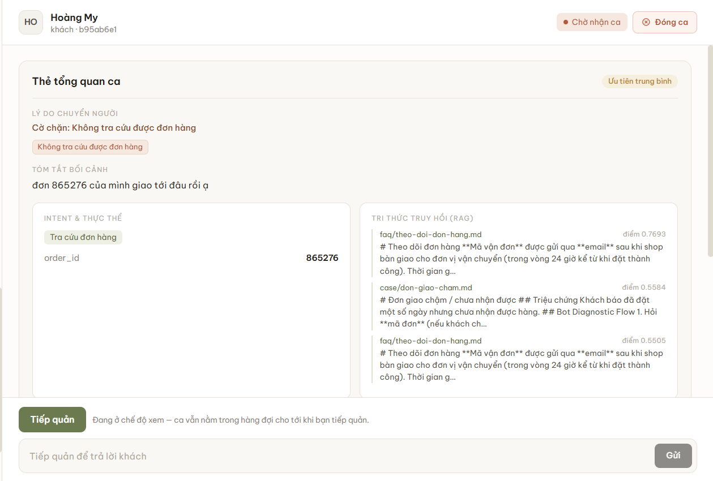

Học viện Kỹ thuật Mật mãKhoa Công nghệ thông tin
ĐỒ ÁN TỐT NGHIỆP
Xây dựng hệ thống chăm sóc khách hàng
tự trị sử dụng Multi-Agent AI
- Sinh viên thực hiện
- Bùi Anh Tuấn – CT060144
- Người hướng dẫn
- ThS. Vũ Thị Hòa, ThS. Cao Thanh Vinh
- Địa điểm
- Hà Nội, 2026

MỞ ĐẦU
Nội dung trình bày
- 1Tổng quan đề tàiBài toán, phạm vi, cơ sở lý thuyết và công nghệ
- 2Phân tích và thiết kếKiến trúc, pipeline bốn tác tử, cơ chế an toàn, cơ sở dữ liệu
- 3Thực nghiệm và triển khaiThách thức kỹ thuật, giao diện, kiểm thử và đo đạc
- 4Kết luậnKết quả, hạn chế và hướng phát triển
Tổng quan đề tài
Bài toán CSKH cho cửa hàng thời trang trực tuyến và hướng tiếp cận của đồ án
- Bài toán đặt ra
- Công nghệ và hạ tầng sử dụng
TỔNG QUAN ĐỀ TÀI
CSKH thủ công: chậm và thiếu nhất quán
- Phần lớn tin nhắn lặp lại quanh giá, size, vận chuyển, đơn hàng, đổi trả; câu trả lời đã có trong chính sách.
- Tin dồn vào buổi tối, cuối tuần; chất lượng trả lời không đồng đều giữa các nhân viên và khó truy vết.
- LLM hiểu ngôn ngữ tốt nhưng có thể “ảo giác”: bịa chính sách, mã giảm giá với giọng rất chắc chắn.
Hướng tiếp cận: tự trả lời ca đủ căn cứ theo quy trình cố định; không chắc chắn thì chuyển cho nhân viên.
TỔNG QUAN ĐỀ TÀI
Công nghệ và hạ tầng sử dụng
Back-end
- Python 3.12
- FastAPI
- SQLAlchemy 2
- Alembic
- Pydantic v2
Multi-agent
- LangGraph
- Bốn tác tử, cạnh cố định
Mô hình ngôn ngữ
- gpt-4o-mini
- text-embedding-3-small
Dữ liệu
- PostgreSQL (Neon)
- Qdrant Cloud
Front-end
- Next.js 14
- Tailwind CSS
- TanStack Query
- PWA
Realtime, quan sát
- WebSocket
- Langfuse
PHÂN TÍCH VÀ THIẾT KẾ
Pipeline bốn tác tử có trình tự cố định
Cổng auto-reply chỉ áp dụng cho ca đã an toàn; mọi ca có cờ chặn luôn chuyển cho nhân viên.
PHÂN TÍCH VÀ THIẾT KẾ
Hai lớp quyết định: an toàn và cấu hình
TÁC TỬ 3 · LUẬT TẤT ĐỊNH
Cơ chế an toàn
- Áp dụng khi
- Có ít nhất một trong 8 cờ chặn
- Kết quả
- Chuyển người, kèm EscalationCard
ADMIN CẤU HÌNH THEO Ý ĐỊNH
auto-reply
- Áp dụng khi
- Ca auto_reply, không có cờ chặn
- Kết quả
- Bật: gửi thẳng. Tắt: giữ nháp chờ duyệt; mặc định tắt cho refund, exchange, complaint
Không ghi đè được: cổng chỉ chọn giữa gửi ngay và chờ duyệt cho ca đã an toàn; ca có cờ chặn luôn chuyển cho nhân viên.
THỰC NGHIỆM VÀ TRIỂN KHAI
Kết quả kiểm thử và đo
BỘ 20 CÂU THỰC TẾ
90%lượt xử lý không cần nhân viên; mục tiêu ≥ 70%
CHUYỂN NHÂN VIÊN
5%1/20 câu, ngoài phạm vi; mục tiêu < 30%
CHUYỂN NGƯỜI KHÔNG CẦN
3%1/32 câu ở ngưỡng truy hồi 0,40; mục tiêu ≤ 5%
DỰ PHÒNG OAN
0%0/20 câu; không bịa mã giảm giá hay chính sách
KIỂM THỬ TỰ ĐỘNG
437trường hợp từ 387 hàm, chạy ngoại tuyến
100 HỘI THOẠI ĐỒNG THỜI
100/100lượt không lỗi; p95 9,7 s, chưa đạt NFR-1
Đo trên hạ tầng thật (Neon, Qdrant Cloud, OpenAI gpt-4o-mini); kho tri thức 15 tài liệu, 95 điểm vector.
THỰC NGHIỆM VÀ TRIỂN KHAI
Độ trễ theo số hội thoại đồng thời
| Số hội thoại đồng thời | Trung bình (s) | p95 (s) | ≤ 5 s (%) |
|---|---|---|---|
| 1 | 5,86 | 5,86 | 0 |
| 10 | 5,13 | 5,65 | 40 |
| 25 | 5,05 | 5,48 | 48 |
| 50 | 6,25 | 6,60 | 0 |
| 100 | 9,00 | 9,71 | 0 |
| đạt NFR-150, chỉ lượt xã giao | 3,82 | 4,41 | 100 |
Một tiến trình uvicorn, hạ tầng gói miễn phí, đo phía máy chủ. NFR-1 yêu cầu p95 ≤ 5 s.
THỰC NGHIỆM VÀ TRIỂN KHAI
Giao diện Admin: EscalationCard

1 2 3- Lý do chuyển ngườiCờ chặn cụ thể kèm mức ưu tiên, không đoán từ câu chữ của AI
- Tri thức truy hồiTối đa 3 nguồn kèm điểm cosine và trích đoạn
- Tiếp quảnAI tạm dừng; Admin chat trực tiếp, mọi hành động ghi audit_log
KẾT LUẬN
Kết luận
Kết quả đạt được
- Pipeline bốn tác tử cố định chạy thật trên Neon, Qdrant Cloud, OpenAI
- Đạt KPI chất lượng: 90% tự xử lý, 5% chuyển người, 0% dự phòng oan
- HITL đầy đủ: EscalationCard, duyệt nháp, cổng theo ý định, realtime
Hạn chế
- p95 chưa ≤ 5 s khi tải tăng: 6,6 s ở 50 và 9,7 s ở 100 hội thoại
- Chạy một tiến trình; khoá lượt, hub realtime ở bộ nhớ
- Tin nhiều ý định vẫn chuyển người; còn suy diễn “không có”
Hướng phát triển
- Lọc đoạn điểm thấp, xếp hạng lại, viết lại câu hỏi nối tiếp
- Đưa dữ liệu phối hợp ra kho dùng chung để chạy nhiều tiến trình
- Vòng học bán tự động: đề xuất bổ sung tri thức, Admin duyệt
Em xin cảm ơn thầy cô
đã lắng nghe
Rất mong nhận được câu hỏi và góp ý của hội đồng
Bùi Anh Tuấn – CT060144